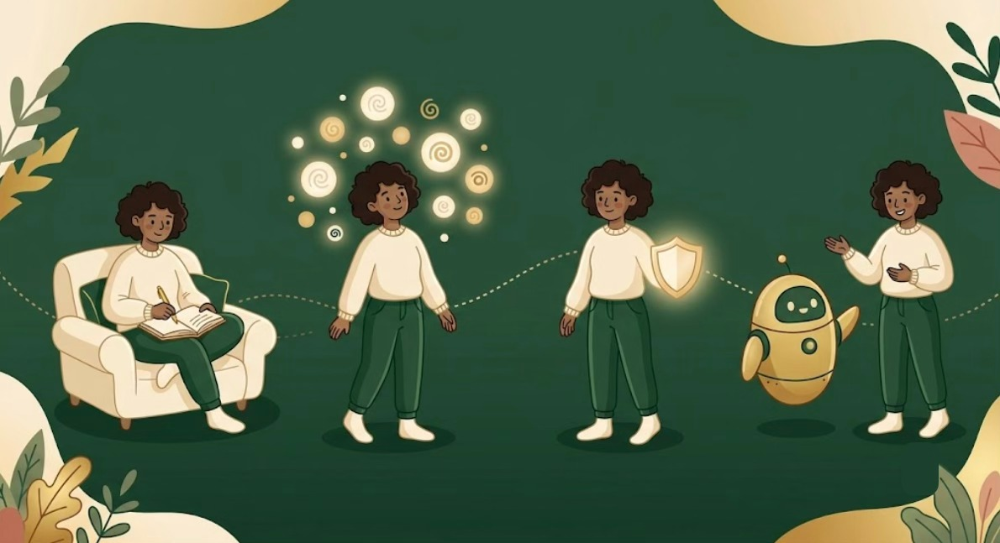

MINDNOOK
The art of reflection,DECODED.
MindNook is a journaling platform built on a published five-layer NLP framework. It scores every entry against your own emotional baseline — not a generic average — models how your mood shifts over time, and knows the difference between a hard day and language that needs real support. Every AI reflection explains its reasoning, and every layer of analysis is yours to switch off.

Most journaling apps store your words.
None of them understand you.
Traditional journals are passive notebooks. They can hold a thousand entries and still tell you nothing about how your mood is actually trending, whether today genuinely differs from your baseline, or when a rough patch is starting to look like something more serious.
Reflective writing, turned into
measurable self-understanding.
MindNook runs a published five-layer framework on every entry, wraps it in a crisis-aware safety layer, and shows its work at every step — so reflection becomes something you can actually track.

One entry. Five layers of understanding.
Every time you write, MindNook simultaneously scores sentiment, classifies intent, updates your longitudinal trend model, checks alignment with your stated goals, and calculates the right response strategy — surfaced on a dashboard built to show change over time, not just a list of past entries.
Four steps to reflective intelligence.
Built on a published
sentiment-aware framework.
MindNook is the reference implementation of a five-layer framework for sentiment-aware reflective writing systems, published as an IEEE TechRxiv preprint. The platform combines client-side NLP, schema-constrained LLM inference, and serverless edge architecture into a psychologically grounded journaling experience — with graceful degradation to local computation whenever a model call fails.

Private by design.
MindNook prioritizes psychological safety. Journal entries are analyzed through protected inference pipelines, every inference type is independently controllable, and you keep full ownership over your reflective history.
Straight answers, before you start.
What makes MindNook different from a regular journaling app?
Is this based on real research?
What happens if I write something concerning?
Can I turn off specific types of analysis?
What AI model powers Nook AI?
Can I delete my data?
Understand your mind,
not just your memories.
Every entry becomes a data point in a framework that's published, tested, and built to explain itself. Start writing — or read the research first.